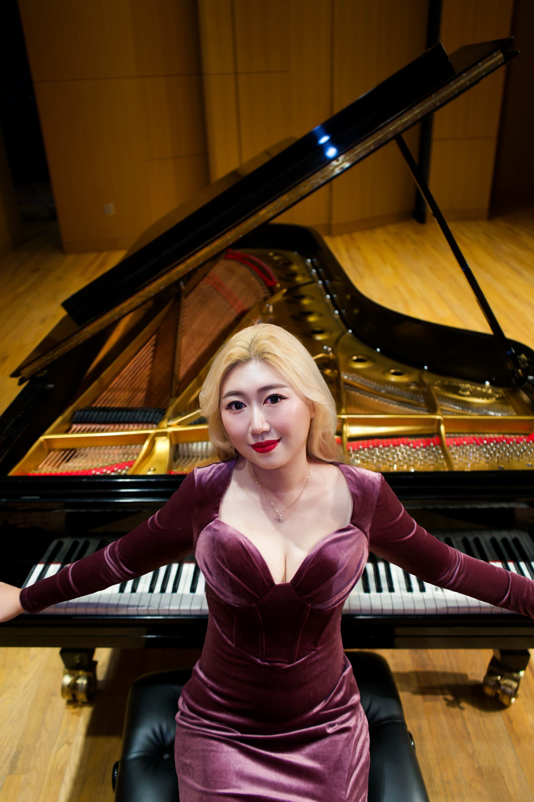
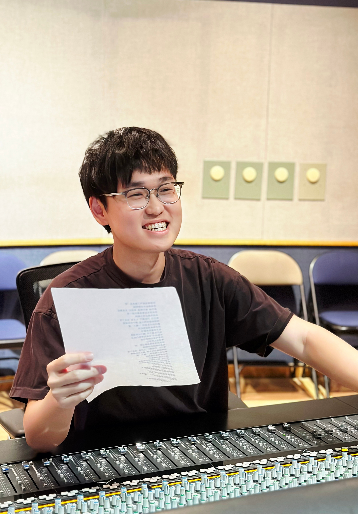
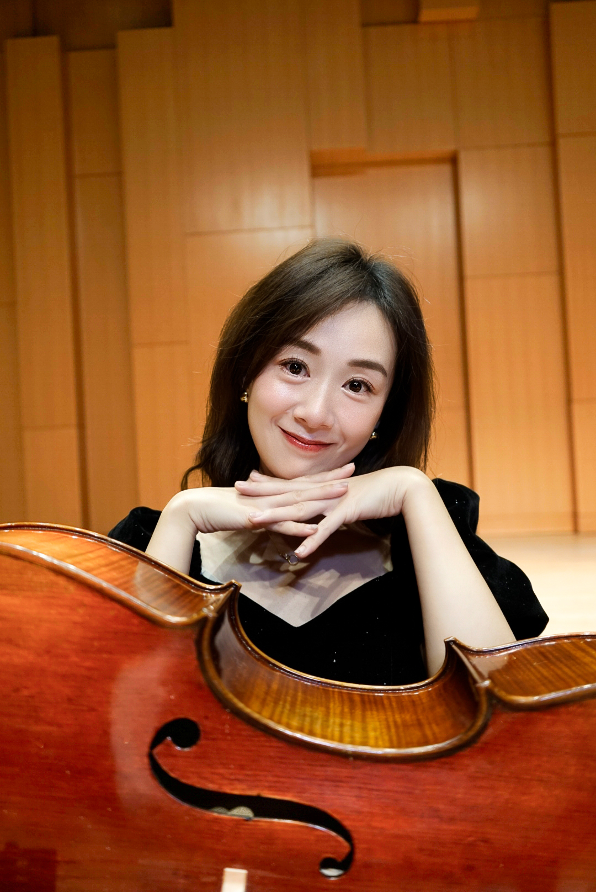
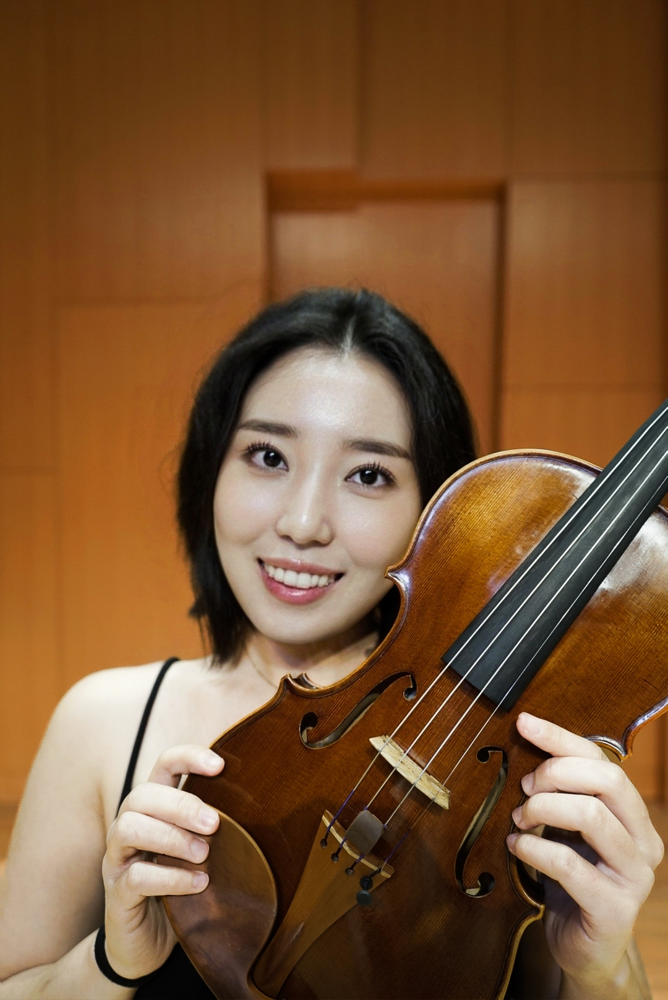
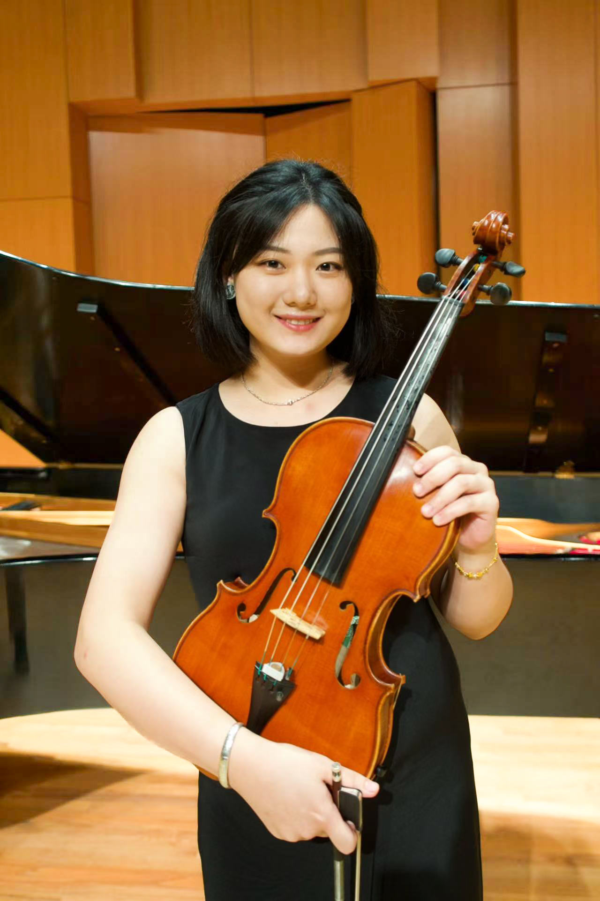
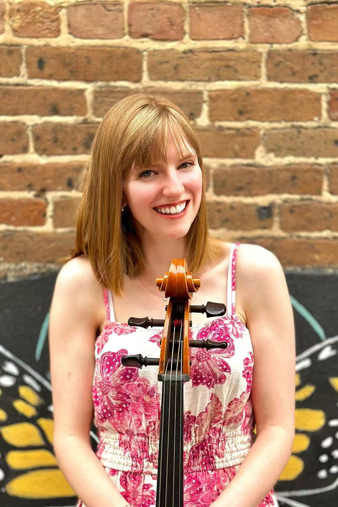
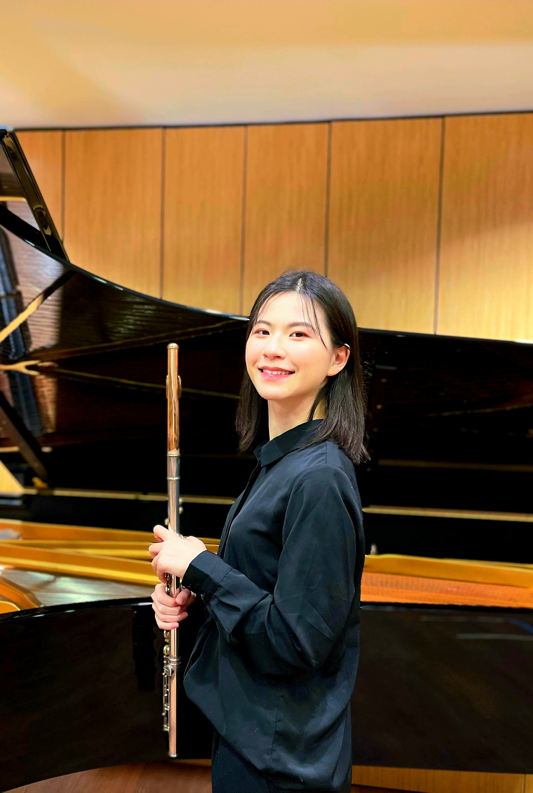
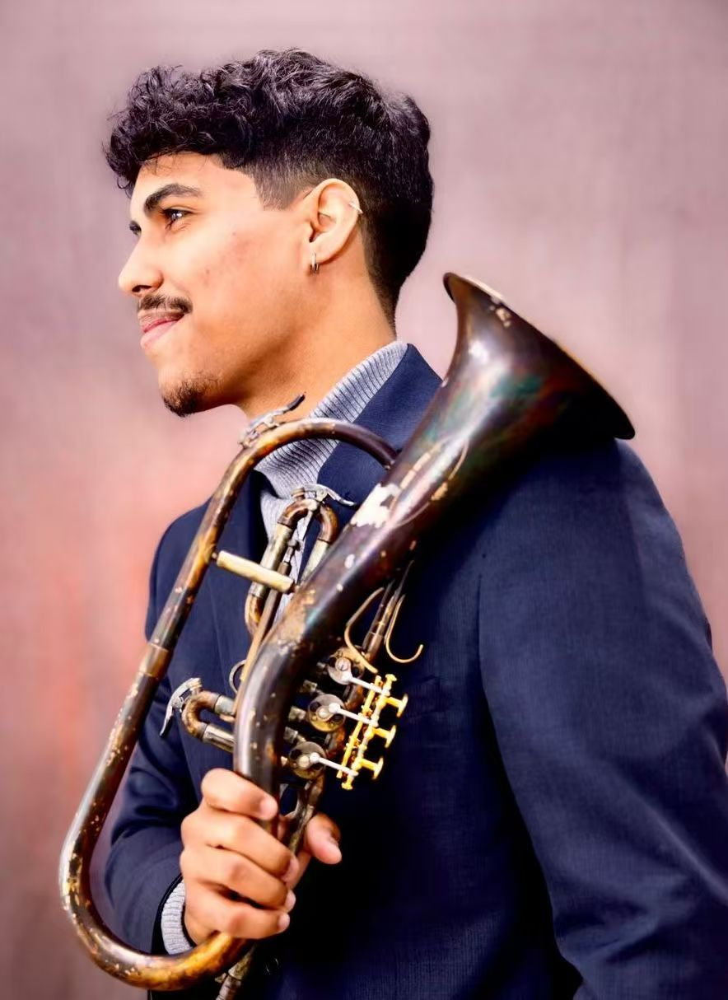
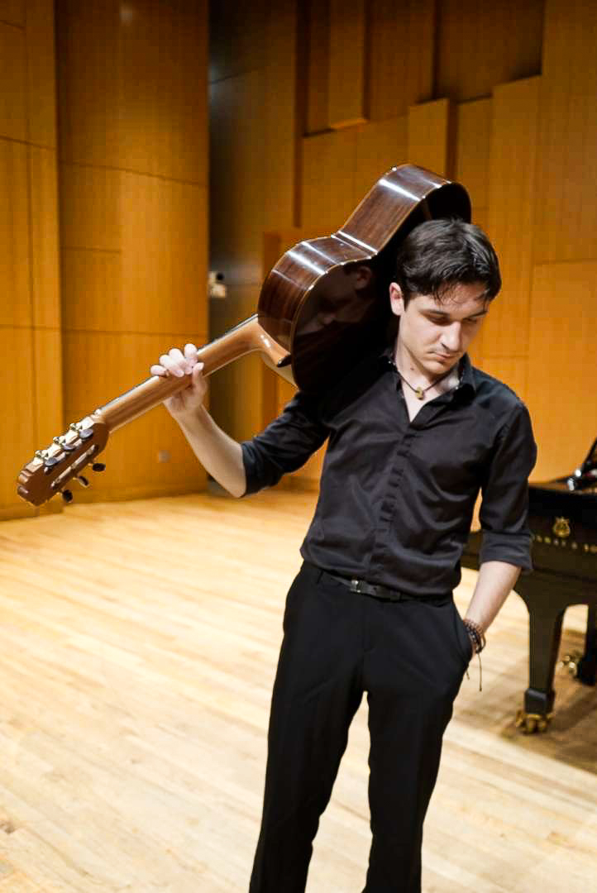

Meet Our World-Class Faculty
Piano

Yibing Zhang
Piano, Founder

Xuan (Xinwei) Chen
Piano, Music Theory

Xinzhuo Li
Piano

Yuchen Liu
Piano, Music Engineering

Sunny (Ting) Gan
Piano, Music Theory, Composition

Yaqi Cao
Piano

Chun-Syuan Wei
Piano
Strings

Mengmeng Huang
Cello, Founder

Travis Pota-Birkhoff
Violin, Viola

Xiachu Song
Violin

Qianqian Fu
Viola, Violin

Rachel Ellis
Cello
Winds

Jiaqi(Lindsay) Li
Flute

Quan Guo
Saxophone

Luis Mora
Trumpet
Percussion

Bobby Plizak
Drums, Percussion

Johnathan Whitehorn
Drums
Voice

Xiaojing (Kim) Luo
Voice

Yuqin Xie
Voice
Guitar

Milos Socanin
Guitar

Yihao Rao
Guitar(Electric/Classical)